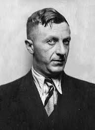

«Обладая силой тысячи усов, он с лёгкостью расправляется с врагами, нанося огромный урон по области. Посторонись!»

«Обладая силой тысячи усов, он с лёгкостью расправляется с врагами, нанося огромный урон по области. Посторонись!»
Ненависть к вторгшемуся врагу - самое священное и гуманное чувство. Но оно рождается с такой болью сердца и муками души, что не дай Бог кому-нибудь испытать его во второй раз. — Павел Батов
